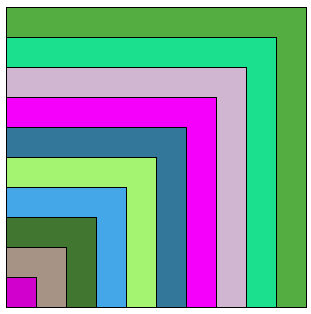
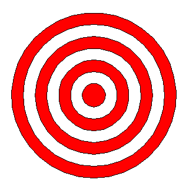
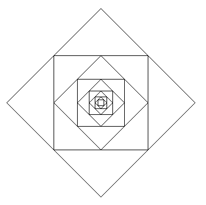

Module Turtle#
Le module Turtle est un programme en Python qui permet de dessiner à l’aide du langage Python. Le curseur en forme de triangle symbolise la tortue qui effectuera les tracés, de la même manière qu’un crayon.
Une documentation plus complète est disponible sur le web :
Documentation officielle docs.python.org
Un tutoriel de présentation des utilisations du module sur le site Zeste de savoir
On donne quelques commandes qui nous seront utiles.
Tour rapide des principales commandes#
Import#
Il faut commencer par importer le module :
import turtle
Fenêtre graphique#
L’affichage de la fenêtre graphique se fait par l’instruction : turtle.setup().
# fenêtre par défaut :
turtle.setup()
# Exemple de fenêtre de dimension 600 par 400 placée en haut à gauche de l'écran:
turtle.setup(width=600,height=400,startx=0,starty=0)
La fenêtre graphique, contient un repère non affiché dont l’origine se trouve au centre de la fenêtre graphique. Les coordonnées sont celles usuellement utilisées en mathématiques.
Agir sur la tortue#
La tortue représente notre crayon. Par défaut, elle est située au centre de l’écran, orientée vers l’est (à droite) et en contact avec la feuille à dessiner. Il est possible d’agir sur la tortue pour en modifier son comportement par défaut.
lever le crayon :
turtle.up()outurtle.penup()baisser le crayon :
turtle.down()outurtle.pendown()déplacer le crayon, la tortue :
turtle.goto(x,y)(si le crayon est baissé, une ligne est alors tracée)cacher la tortue, la pointe du crayon :
turtle.hideturtle()ou en raccourciturtle.ht()montrer la tortue, la pointe du crayon :
turtle.showturtle()ou en raccourciturtle.st()connaître la position de la tortue :
turtle.position()repositionner la tortue au centre :
turtle.home()modifier la taille du tracé :
turtle.pensize(taille)où taille est égale par défaut à 1
Dessiner#
Le dessin se réalise en indiquant à la tortue des déplacements. Les déplacements sont des vecteurs. Cela signifie qu’ils ont en ligne droite, qu’il faut un sens et une longueur. Concrètement, cela implique que la tortue se déplace en avant ou en arrière, pivote sur elle même pour changer de direction et parcourt une longueur donnée.
Les commandes de déplacement sont les suivantes:
marche avant :
turtle.forward(distance)ou en raccourciturtle.fd(distance)marche arrière :
turtle.backward(distance)ou en raccourciturtle.bd(distance)pivoter sur la droite (sens des aiguilles d’une montre) :
turtle.right(angle)pivoter sur la gauche (sens inverse des aiguilles d’une montre) :
turtle.left(angle)
Exemple#
Pour dessiner un carré de côté 100:
for _ in range(4):
turtle.forward(100)
turtle.left(90)
On peut donc dessiner différentes formes géométriques polygonales. Pour dessiner des cercles ou des arcs de cercles, il existe une commande dédiée : turtle.circle(rayon, angle).
Exemple#
turtle.circle(100)
turtle.up()
turtle.home()
De la couleur#
On peut utiliser de la couleur dans nos dessins. Une couleur pour les lignes et une couleur pour le remplissage des formes. Les couleurs acceptent plusieurs formats d’entrée : un nom de couleur (en anglais), un triplet (R,G,B) ou chaque valeur est un nombre décimal compris entre 0 et 255 ou alors une valeur hexadécimale représentant le triplet RGB.
modifier la couleur de tracé :
turtle.pencolor(couleur)modifier la couleur de remplissage :
turtle.fillcolor(couleur)
Pour remplir une forme d’une couleur, il faut entourer la construction de la forme par les commandes turtle.begin_fill() et turtle.end_fill().
Exemple#
Dessiner un carré de couleur rouge
# on importe le module turtle
import turtle
# on grossit le trait
turtle.pensize(3)
# couleur de crayon en vert
turtle.pencolor("#00ff00")
turtle.fillcolor("red") # ou (255,0,0) ou #ff0000
# début du remplissage en couleur
turtle.begin_fill()
# dessin du carré
for _ in range(4):
turtle.forward(100)
turtle.left(90)
# fin de couleur de remplissage
turtle.end_fill()
# fermer proprement l'application
turtle.exitonclick()
Exercice#
Représenter avec le module turtle les figures suivantes avec un script itératif puis récursif.
Des carrés imbriqués de plusieurs couleurs aléatoires :

Une cible :

Des carrés dans des carrés, imbriqués :

On pourra y ajouter de la couleur !
[ ]: